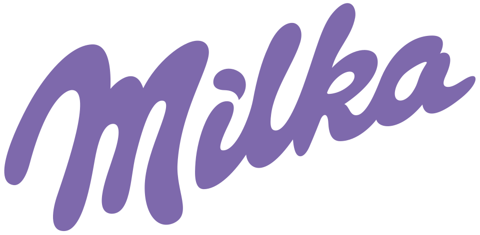

밀카 Milka
밀카(Milka)는 1901년 스위스에서 Suchard가 처음 만든 유럽의 초콜릿 과자 브랜드이다. 독일 뢰라흐에서 생산되며 미국 기업 Mondelēz International이 소유하고 있다.
최종 업데이트

밀카는 어떤 브랜드인가
밀카는 초콜릿 바와 부활절·크리스마스용 특별 모양 제품을 판매하고, 초콜릿을 입힌 쿠키와 비스킷도 같은 이름으로 내놓는 유럽의 초콜릿 과자 브랜드이다. 브랜드명은 원래 주원료였던 독일어 'Milch'(우유)와 'Kakao'(코코아)를 합친 말이며, 현재는 설탕과 카카오버터가 주원료를 대신한다.
보라색 포장과 필기체 로고는 1960년대에 상표로 등록되었고, 밀카는 곧 독일 판매 1위 초콜릿이 되었다. 상징은 목에 방울을 단 보라색 시멘탈 젖소이며, 1960년대부터 '부드러움'을 광고의 중심 주제로 삼아 왔다.
1995년부터는 알파인 스키 선수들을 후원해 왔다. 2012년부터 Mondelēz International이 소유하고 있으며, 2016년에는 중국으로 시장을 넓혔다.
밀카는 어떻게 시작되고 성장했나
1825년 스위스의 초콜릿 제조업자 Philippe Suchard가 Neuchâtel에 제과점을 열었고, 이듬해 Chocolat Suchard를 세워 Serrières에서 생산을 시작했다. 1890년대에는 Suchard의 초콜릿에 우유가 더해졌다.
Philippe Suchard의 사위 Carl Russ-Suchard가 1901년 밀카 브랜드를 만들었고, 첫 제품은 보라색 포장으로 나왔다. 1910년대에 오스트리아에 제품이 소개되었고, 1920년대에는 크리스마스와 부활절 같은 명절을 주제로 한 한정판 초콜릿이 나왔다.
1970년 Suchard는 Tobler와 합병해 Interfood가 되었고, 1982년 Jacobs와 합쳐 Jacobs Suchard가 되었으며, 1990년 Kraft Foods가 밀카를 포함해 이를 인수했다.
밀카의 브랜드 아이덴티티는 무엇인가
보라색 포장과 보라색 젖소 Lila를 앞세워 '부드러움'을 내세운 초콜릿 브랜드이며, 이름은 우유와 카카오를 뜻하는 독일어에서 왔다.
밀카의 대표 제품과 서비스는 무엇인가
밀카는 구매하는 지역에 따라 여러 종류의 포장과 맛으로 판매된다. 대표 제품은 초콜릿 바이다.
토피 제품으로는 캐러멜을 채운 토피에 밀크초콜릿을 입힌 Milka Toffee와 Milka Toffee Hazelnut이 있다. 그 밖에 초콜릿을 입힌 쿠키와 비스킷, Philadelphia Milka Cheese, 헤이즐넛 코코아 스프레드가 있고, 유럽 각지의 변형 제품도 있다.
부활절과 크리스마스에는 산타클로스, 크리스마스 장식, 부활절 토끼, 여러 크기의 부활절 달걀 모양으로 굳힌 초콜릿 제품도 판매한다.
밀카는 지금 어떤 상태인가
2012년 10월 Kraft가 스낵 사업부를 분사해 Mondelēz International로 이름을 바꾸었고, 밀카는 이 회사가 소유하고 있다. 2016년에는 중국으로 시장을 넓혔다.
같은 해 원래 제조사 Suchard는 Mondelēz가 매각한 여러 브랜드에 포함되어 Carambar & Co를 이루었으나, 밀카의 소유권은 Mondelēz가 유지했다.
밀카 로고는 어떻게 변해왔나
자주 묻는 질문
밀카는 언제 설립되었나요?
밀카는 1943년 설립되었습니다.
밀카는 어떤 산업의 브랜드인가요?
밀카는 식음료 분야의 브랜드입니다.
밀카의 브랜드 아이덴티티는 무엇인가요?
보라색 포장과 보라색 젖소 Lila를 앞세워 '부드러움'을 내세운 초콜릿 브랜드이며, 이름은 우유와 카카오를 뜻하는 독일어에서 왔다.
밀카의 대표 제품은 무엇인가요?
밀카는 구매하는 지역에 따라 여러 종류의 포장과 맛으로 판매된다.
밀카는 어느 기업이 소유하고 있나요?
2012년 10월 Kraft가 스낵 사업부를 분사해 Mondelēz International로 이름을 바꾸었고, 밀카는 이 회사가 소유하고 있다.
밀카의 본사는 어디에 있나요?
밀카의 본사는 뢰라흐에 있습니다(위키데이터 기준).
밀카의 공식 웹사이트는 어디인가요?
밀카의 공식 웹사이트는 https://www.mondelezinternational.com/our-brands/milka/ 입니다.
출처와 검증
밀카 관련 참고: 공식 웹사이트 · 위키데이터 Q757388 · 한국어 위키백과 · 영어 위키백과. 브랜드명은 한글과 원어를 함께 표기하되 데이터에 없는 표기는 만들지 않습니다. 기원 국가·설립연도는 검수된 정의문에서 확인된 값을 우선하고, 없을 때만 공식 웹사이트 URL이 일치하는 위키데이터 개체의 값을 씁니다. 위키데이터 값은 2026-11-11 기준입니다.